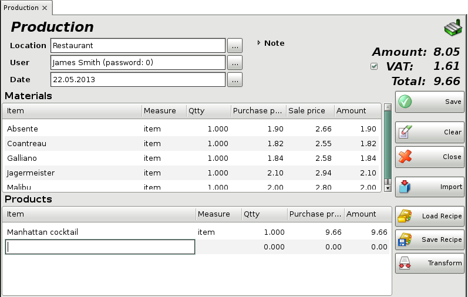

Production
Production is a very usefull operation. It represents the production and distribution of items. Production decreases quantities of chosen items in you warehouse and increases the quantities of other choosen items. The operation is completed by issuing of a document.
To fill in the Production window (choose Operations->Production-->Production) do the following:
In the Location field fill in the name or code
of the location, from which quantities will be taken.
To select a location do
one of the following:
- use keyboard shortcut F4 in the locations
list;
- use the Enter key in the locations list;
- double-click
the location in the list;
- type the name of the location in the text
field;
- type the code of the location in the text field.
In the User field fill in the name of the
employee, who will perform the sale.
To select a user do one of the
following:
- use keyboard shortcut F4 in the users list;
- use
the Enter key in the users list;
- double-click the user in the
list;
- type the user�s name in the text field;
- type the user�s code in
the text field.
In the Date field fill in the date of the
document.
Select the date in the Calendar window by pressing
the F4 key or by double-clicking in the text field.
In the Materials list fill in the items, which will be used as
materials and the used quantities.
To select an item do one of the
following:
- use keyboard shortcut F4 in the items list;
- type
the name of the item in the text field;
- double-click the item in the
list;
- type the code of the item in the text field;
- type the barcode of
the item in the text field.
In the Products list fill in the items, which will be created
as products and the created quantities.
To select an item do one of the
following:
- use keyboard shortcut F4 in the items list;
- type
the name of the item in the text field;
- double-click the item in the
list;
- type the code of the item in the text field;
- type the barcode of
the item in the text field.
If you are working with lots, you may enter a lot number, a serial number, manufactured and expiration dates and the location for each product in the production window. You can open the Calendar window by pressing the F4 key, when filling the Expiration Date and Manufactured Date fields. In case you do not provide lot information, the Lot column is filled in automatically with "NA".
To enter materials write the quantity in the coresponding field and then press Enter. The application will split the quantity by lots, depending on the method set in operations settings.

If you wish to select more than one item, open the items list by pressing the F4 key, hold down the Ctrl key and click the desired items. You can select adjacent items by holding down the Shift key and using the arrow keys.
In the Qtty column fill in the number of items being used as materials or products. Press Enter to confirm. The application automatically fills in the Amount column. Use the same method to enter data about each item bought by the customer. To save the document, press the F9 key. To cancel the operation, press the Esc key.
To add an already stored recipe to the production use the Load
Recipe button which will open the Recipes dialog and let you
choose a recipe to be loaded.
To store the current production materials and products into a recipe for quicker and more convinient use, press the Save Recipe button. It will open a New Recipe dialog from where you can choose a name for the recipe and save it for later use.
�2006-2015 Microinvest, All rights reserved